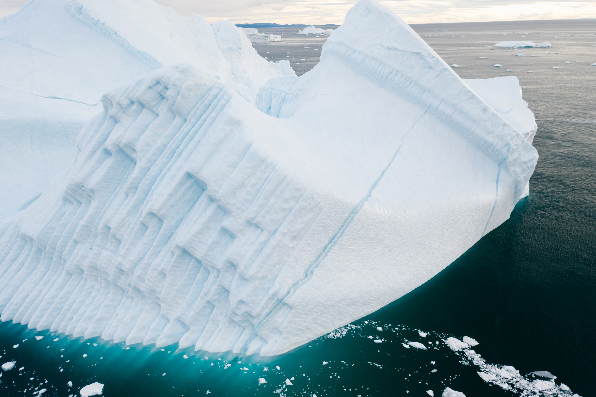
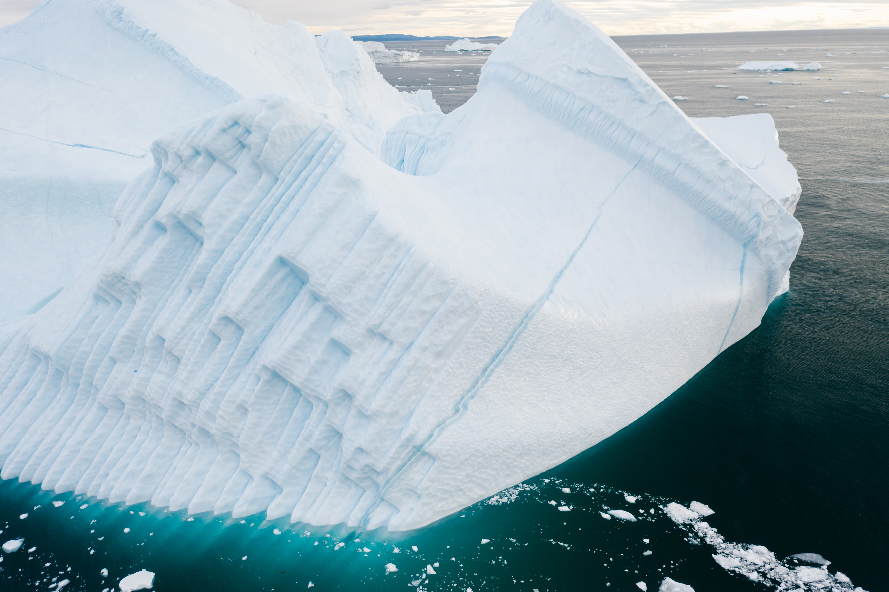

De zuidpool
De zuidpool, ook wel Antarctica genoemd, is het zuidelijkste continent op aarde. Het is het enige continent waar geen mensen permanent wonen. De enige mensen zijn onderzoekers die er soms wel maanden achter elkaar verblijven.

Antarctica
De zuidpool, ook wel Antarctica genoemd, is het zuidelijkste continent op aarde. Het is het enige continent waar geen mensen permanent wonen. De enige mensen zijn onderzoekers die er soms wel maanden achter elkaar verblijven.
Antarctica is de natuurlijke omgeving van de pinguïns. Je zult hier geen ijsberen vinden, maar wel veel andere dieren, zoals walvissen en zeehonden.
 



Een ijsberg is een drijvende ijsmassa afkomstig van een gletsjer of een ijskap. Binnen de poolcirkels is, door het poolklimaat, een groot aantal gletsjers te vinden die tot aan de zee reiken. Zo'n gletsjer schuift heel langzaam op naar beneden. Wanneer een gletsjer de zee bereikt, breken er grote brokken ijs af die vervolgens wegdrijven. Deze ijsbergen worden via de zeestroom naar warmere streken vervoerd en kunnen een afstand van meer dan 2950 kilometer (1600 zeemijlen) afleggen alvorens ze geheel gesmolten zijn. (bron)

Pinguïns of vetganzen zijn een orde van niet-vliegende zeevogels die alleen voorkomen op het zuidelijk halfrond. De pinguïns behoren tot de orde Sphenisciformes, klasse Aves (vogels). Alle moderne pinguïns behoren tot de familie van de Spheniscidae, maar er zijn uitgestorven soorten die buiten deze kroongroep vallen. (bron)
Antarctica is het koudste continent op aarde. Het binnenland heeft een lange en koude winter waarbij het gemiddeld -40 tot -60 °C is. In de korte zomer wordt het daar gemiddeld niet warmer dan -20 °C. Aan de kust en op het Antarctisch Schiereiland is het minder koud. In de winter is het daar gemiddeld -10 tot -30 °C, afhankelijk van de locatie, terwijl in de zomer de temperatuur gemiddeld iets onder tot rond het vriespunt ligt. (bron)